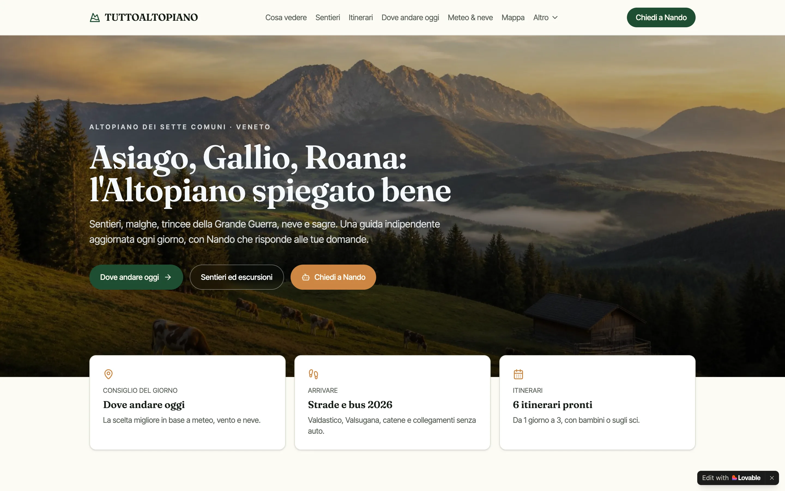
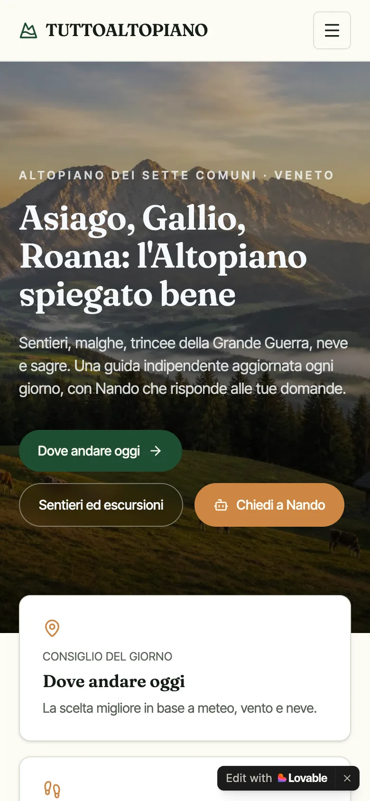
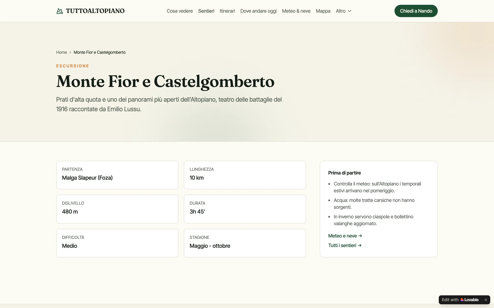
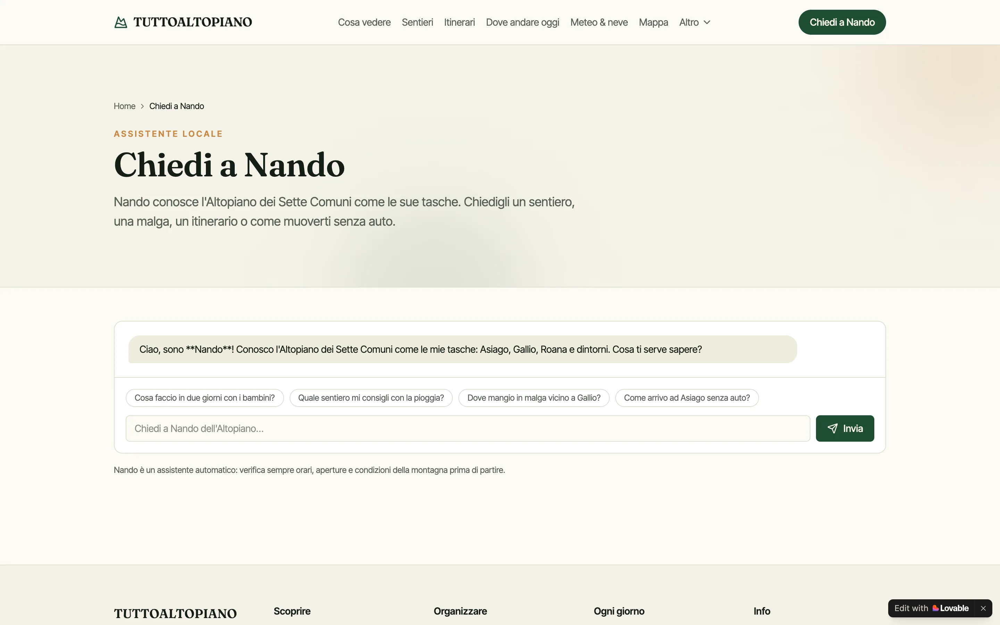
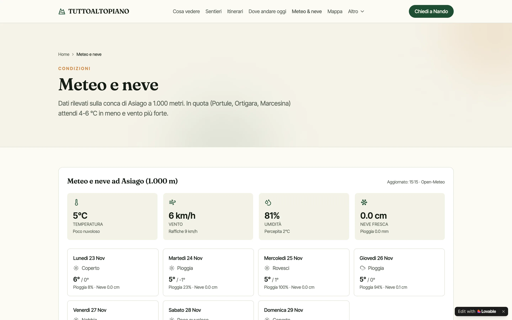
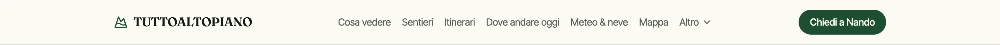
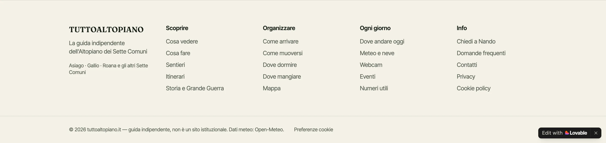

Design system attuale · tuttoaltopiano.it
È l'identità più caratterizzata dei cinque: serif Fraunces, verde bosco, ocra e colore carta, con foto vere del territorio. Il problema principale è il contrasto della CTA ocra; c'è anche un residuo di Lovable visibile in produzione.
Gli elementi base del sito in un colpo d'occhio: i colori con il loro ruolo (come sono definiti nel codice), i caratteri, i pulsanti e le forme ricorrenti.
8pxCosa tenere e cosa correggere nel restyling. I problemi sono ordinati per gravità; ognuno riporta da dove viene l'evidenza.
Il testo chiaro #FEFCF4 su ocra #CD8643 ha contrasto 2.88:1, sotto la soglia AA di 4.5:1.
In basso a destra compare il badge dell'editor con cui è stato costruito il sito: va rimosso dalla build pubblica.
Il logo esiste solo come SVG inline nell'header (montagna più wordmark in Fraunces): manca un file da scaricare o usare altrove.
Homepage su desktop (1440px) e su mobile (390px), poi le pagine interne analizzate. Clicca un'immagine per vedere la pagina intera.







Quanto è usato davvero ogni colore. La barra mostra le proporzioni: gli sfondi sono pesati per superficie occupata, i testi per numero di caratteri. I quadretti indicano i colori semitrasparenti.
#FFFFFF35.8% della superficie#EEEDDE20.7% della superficie · trasp. 0.6#EDEBDD15.5% della superficie · trasp. 0.5#1F4D325.5% della superficie#EDEBDC5.2% della superficie · trasp. 0.4#FCF9F44.8% della superficie · trasp. 0.9#EEECDD3.5% della superficie · trasp. 0.7#D086433.2% della superficie · trasp. 0.15#1D4E313.2% della superficie · trasp. 0.1#F5F5F51.2% della superficie · trasp. 0.1#EEECDD0.5% della superficie#FCFAF40.5% della superficie#CD86430.2% della superficie#1B1B1B0.2% della superficie#58615671.3% del testo#141D1617.8% del testo#FAF9F14.9% del testo#F4F9FB1.7% del testo · trasp. 0.85#CD86431.1% del testo#1F4D321.1% del testo#F5F9FB0.8% del testo#C5C1B90.4% del testo#F5F9FB0.4% del testo · trasp. 0.8#FEFCF40.3% del testo#DEDFD498.3% dei bordi#F5FAFA1.7% dei bordi · trasp. 0.4Il contrasto misura quanto un testo si stacca dallo sfondo. La soglia minima per il testo normale è 4.5:1; per i testi grandi basta 3:1.
| Elemento | Sfondo | Contrasto | Esito |
|---|---|---|---|
| Testo #586156 | #FFFFFF | 6.44:1 | Leggibile (AA) |
| Testo #141D16 | #FFFFFF | 17.25:1 | Leggibile (AA) |
| Testo #CD8643 | #FFFFFF | 2.96:1 | Insufficiente |
| Testo #1F4D32 | #FFFFFF | 9.70:1 | Leggibile (AA) |
| Testo #C5C1B9 | #FFFFFF | 1.79:1 | Insufficiente |
| Pulsante «Chiedi a Nando» | #1F4D32 | 9.18:1 | Leggibile (AA) |
| Pulsante «Dove andare oggi» | #1F4D32 | 9.18:1 | Leggibile (AA) |
| Pulsante «Chiedi a Nando» | #CD8643 | 2.88:1 | Insufficiente |
| Pulsante «Parla con Nando» | #CD8643 | 2.88:1 | Insufficiente |
| Pulsante «Invia» | #1F4D32 | 9.18:1 | Leggibile (AA) |
I titoli e il testo come appaiono sul sito, con dimensione, interlinea, peso e colore. Sotto, tutte le dimensioni di carattere usate, dalla più grande alla più piccola.
Pulsanti, badge, card e campi dei form ricostruiti con gli stili reali, ognuno sul suo sfondo (dove lo sfondo è un'immagine o un gradiente scuro, viene simulato).
Nessun badge rilevato.
Forma, sfondo, bordo e ombra reali; il contenuto è schematizzato.
Raggi degli angoli e ombre più usati. Un raggio di 9999px significa forma a pillola.
8px12px9999px6px6px 0px 0px 6px0px 6px 6px 0px16px 16px 16px 4pxPer chi sviluppa: valori grezzi estratti dal browser. Il file completo è tokens.json.
| Elemento | Valore |
|---|---|
| Larghezza massima contenuti | 1152px (12) |
| Spazio verticale delle sezioni | 80px / 80px (5), 0px / 0px (2), 0px / 80px (1), 0px / 96px (1) |
| Spaziature tra elementi (gap) | 16px (11), 8px (10), 12px (2), 24px (2), 40px (2), 4px (1), 32px (1), 8px 24px (1), 6px (1) |
| Header | {"bg": "#FCF9F4E6", "h": 65, "position": "sticky", "backdrop": "blur(8px)", "borderBottom": "1px #DEDFD4"} |
| Footer | {"bg": "#EEEDDE99", "color": "#141D16", "h": 342} |
| Icone Lucide usate | arrow-right, bot, footprints, snowflake, mountain-snow, chevron-down, map-pin, calendar-days, thermometer, wind, droplets |
| Transizioni e animazioni | 0.15s cubic-bezier(0.4, 0, 0.2, 1) (40), 0.2s cubic-bezier(0.16, 1, 0.32, 1) (1), 0.2s, 0.2s, 0.1s ease, ease, ease (1), 0.2s, 0.1s ease, ease (1), 0.2s ease (1) |
| tag | font | size | peso | interlinea | colore | caratteri | esempio |
|---|---|---|---|---|---|---|---|
| p | Inter Tight | 14px | 400 | 20px | #586156 | 1612 | La scelta migliore in base a meteo, vento e ne |
| p | Inter Tight | 12px | 400 | 16px | #586156 | 446 | 1.001 m |
| p | Inter Tight | 16px | 400 | 24px | #586156 | 360 | Un tavolato calcareo a mille metri sopra la pi |
| a | Inter Tight | 14px | 400 | 20px | #586156 | 287 | Cosa vedere |
| p | Fraunces | 18px | 600 | 28px | #141D16 | 278 | Dove andare oggi |
| p | Inter Tight | 12px | 400 | 16px | #586156 | 188 | Consiglio del giorno |
| p | Inter Tight | 16px | 400 | 24px | #FAF9F1 | 165 | Nando è la guida virtuale dell'Altopiano: gli |
| p | Inter Tight | 18px | 400 | 28px | #F4F9FBD9 | 148 | Sentieri, malghe, trincee della Grande Guerra, |
| li | Inter Tight | 14px | 400 | 20px | #FAF9F1 | 147 | Che sentiero faccio con i bambini? |
| span | Inter Tight | 14px | 500 | 20px | #141D16 | 141 | Anello del Monte Zebio |
| p | Inter Tight | 14px | 500 | 20px | #141D16 | 98 | Mercatini di Natale |
| span | Inter Tight | 12px | 400 | 16px | #586156 | 78 | Facile · 2h 30' |
| h2 | Fraunces | 24px | 600 | 32px | #141D16 | 65 | Sentieri più cercati |
| p | Fraunces | 20px | 600 | 28px | #141D16 | 63 | Sacrario Militare del Leiten |
| a | Inter Tight | 14px | 500 | 20px | #1F4D32 | 60 | Vedi la pagina completa |
| h1 | Fraunces | 60px | 600 | 60px | #F5F9FB | 48 | Asiago, Gallio, Roana: l'Altopiano spiegato be |
| h2 | Fraunces | 36px | 600 | 40px | #141D16 | 48 | L'Altopiano: sette comuni, mille modi di viver |
| h2 | Fraunces | 30px | 600 | 36px | #141D16 | 47 | Tre idee per la giornata |
| p | Inter Tight | 12px | 600 | 16px | #CD8643 | 37 | Consigli di oggi · lunedì 23 novembre |
| p | Inter Tight | 12px | 600 | 16px | #F5F9FBCC | 35 | Altopiano dei Sette Comuni · Veneto |
| p | Inter Tight | 14px | 600 | 20px | #141D16 | 34 | Scoprire |
| h3 | Fraunces | 20px | 600 | 28px | #141D16 | 32 | Meteo e neve ad Asiago (1.000 m) |
| a | Inter Tight | 14px | 500 | 20px | #FAF9F1 | 30 | Chiedi a Nando |
| a | Inter Tight | 14px | 500 | 20px | #FEFCF4 | 29 | Chiedi a Nando |
| token | selettore | valore |
|---|---|---|
--font-sans | :root, :host | "Inter Tight", system-ui, sans-serif |
--color-background | :root, :host | var(--background) |
--color-foreground | :root, :host | var(--foreground) |
--color-border | :root, :host | var(--border) |
--font-display | :root, :host | "Fraunces", Georgia, serif |
--radius | :root | .5rem |
--background | :root | #FCFAF4 |
--foreground | :root | #141D16 |
--card | :root | #FFFFFF |
--card-foreground | :root | #141D16 |
--popover | :root | #FFFFFF |
--popover-foreground | :root | #141D16 |
--primary | :root | #1F4D32 |
--primary-foreground | :root | #FAF9F1 |
--secondary | :root | #EEECDD |
--secondary-foreground | :root | #233226 |
--muted | :root | #F0EFE6 |
--muted-foreground | :root | #586156 |
--accent | :root | #CD8643 |
--accent-foreground | :root | #FEFCF4 |
--destructive | :root | #CC2827 |
--destructive-foreground | :root | #FBF8F1 |
--border | :root | #DEDFD4 |
--input | :root | #DEDFD4 |
--ring | :root | #1F4D32 |
--stone-warm | :root | #E2DED1 |
--larch | :root | #8B5D38 |
--larch-foreground | :root | #FBF8F1 |
--snow | :root | #F5F9FB |
--chart-1 | :root | #1F4D32 |
--chart-2 | :root | #CD8643 |
--chart-3 | :root | #477A8A |
--chart-4 | :root | #92B074 |
--chart-5 | :root | #6E4C40 |
--sidebar | :root | #FAF8F3 |
--sidebar-foreground | :root | #141D16 |
--sidebar-primary | :root | #1F4D32 |
--sidebar-primary-foreground | :root | #FAF9F1 |
--sidebar-accent | :root | #EEECDD |
--sidebar-accent-foreground | :root | #233226 |
--sidebar-border | :root | #DEDFD4 |
--sidebar-ring | :root | #1F4D32 |
--background | .dark | #09120B |
--foreground | .dark | #F4F2EA |
--card | .dark | #131E16 |
--card-foreground | .dark | #F4F2EA |
--popover | .dark | #131E16 |
--popover-foreground | .dark | #F4F2EA |
--primary | .dark | #75B683 |
--primary-foreground | .dark | #09120B |
--secondary | .dark | #202921 |
--secondary-foreground | .dark | #F4F2EA |
--muted | .dark | #202921 |
--muted-foreground | .dark | #A3A799 |
--accent | .dark | #D38C49 |
--accent-foreground | .dark | #09120B |
--destructive | .dark | #ED5350 |
--destructive-foreground | .dark | #FBF8F1 |
--border | .dark | #FFFFFF1F |
--input | .dark | #FFFFFF26 |
--ring | .dark | #75B683 |
--stone-warm | .dark | #302E23 |
--larch | .dark | #AF784E |
--larch-foreground | .dark | #0E0B03 |
--snow | .dark | #282F31 |
--sidebar | .dark | #0F1911 |
--sidebar-foreground | .dark | #F4F2EA |
--sidebar-primary | .dark | #75B683 |
--sidebar-primary-foreground | .dark | #09120B |
--sidebar-accent | .dark | #202921 |
--sidebar-accent-foreground | .dark | #F4F2EA |
--sidebar-border | .dark | #FFFFFF1F |
--sidebar-ring | .dark | #75B683 |